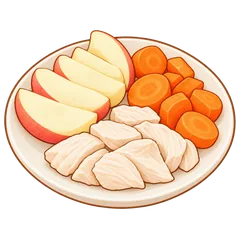
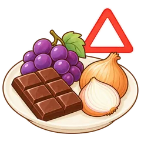

5~6차시 · 먹이 주기 (이미지 분류)
🐾 이미지 분류 AI로 실천하는 반려동물 양육 책임
반려동물의 유익·유해 음식 데이터를 직접 수집하고 분류 모델을 학습시켜,
우리 동물을 안전하게 돌보는 똑똑한 인공지능 프로그램을 직접 만들어 보아요!
활동 1. 내 동물의 '비밀 식단'을 조사해요
내가 기르고 싶은 나만의 반려동물을 디자인하고, 그 동물이 안전하게 먹을 수 있는 음식과 절대 먹으면 안 되는 음식을 수집해 보아요.
1 내가 만든 나만의 반려동물은 무엇인가요?
2 내 동물이 먹을 수 있는 유익한 음식과 위험한 유해 음식을 채워보세요.

먹으면 유익한 음식 (정상 급여 가능)
먹으면 유해한 음식 (급여 불가!)3 인공지능에게 학습시킬 먹이 분류 카테고리(클래스) 설계하기
인공지능 모델이 확실하게 구분할 수 있도록 2가지 이상의 클래스를 명명해 주세요.
클래스 1 이름 (유익한 음식 그룹)
클래스 2 이름 (유해한 음식 그룹)